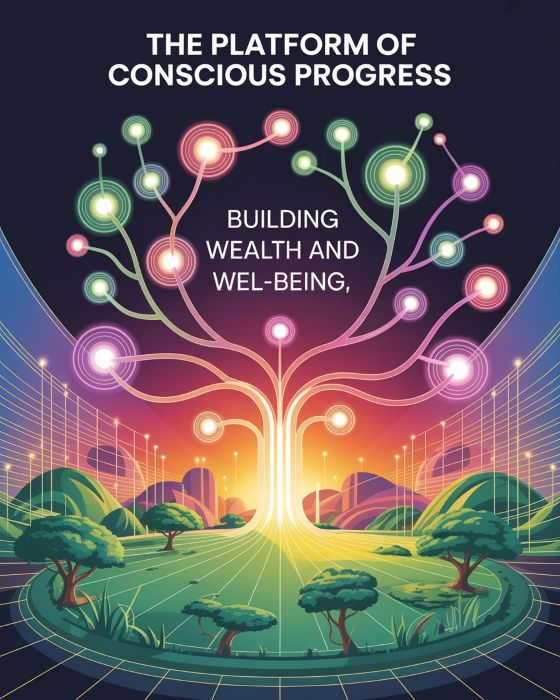
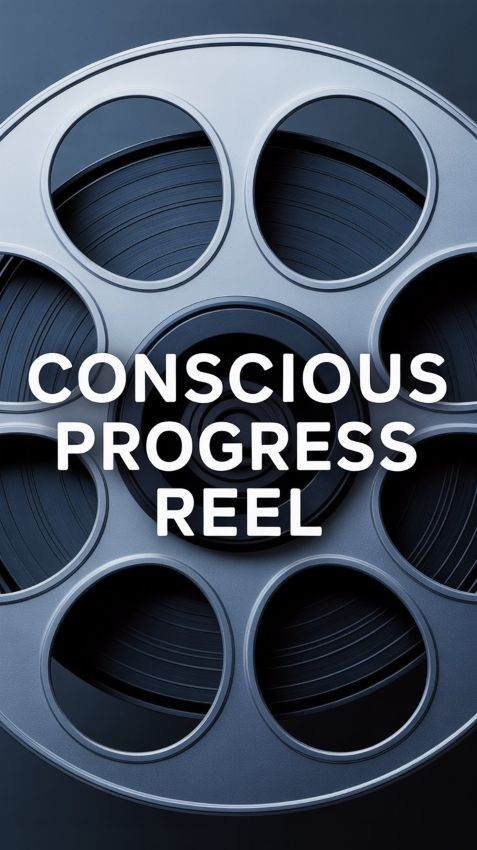
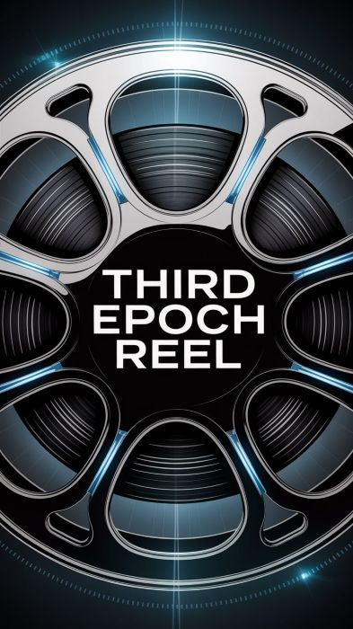
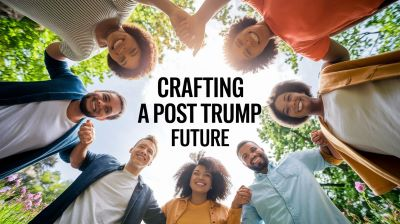

This Moment - Our Movement
Humankind is perched at the precipice of a Great Reckoning. We are standing before the most consequential crossroad in our entire human journey—pointed in two very different directions.
Unfortunately, we are definitively headed in the wrong direction.
Since January 2025 the sanctity of our Constitution, due process, the balance of power, our ability to address climate change, geopolitical stability, and much more have all been jeopardized by an emerging oligarchic autocracy centered on one man, Trump who seeks absolute power.

We must stop Trump—but that alone is not enough. Equally as vital, we must clearly define and passionately articulate our vision for a tremendous future after Trump.
Introducing... Conscious Progress
V-Impact's focus is on imagining and creating a new way forward, the path of Conscious Progress, where humankind becomes the Conscious Architects, of an Outrageously Positive and Amazing Future.

Conscious Progress is humanity’s next great leap—it is the intentional advancement of people, society, and technology—guided by a keen awareness of our impact on all life and driven by enlightened, purposeful design.

Conscious Progress aligns innovation with ethical values, human potential, and the well-being of all. Conscious Progress moves us beyond growth for its own sake and toward a future where progress is deliberate, regenerative, and transformative.
The Great Leap
We are part of the living world—a multi-billion-year evolutionary pathway, on a trajectory to produce ever-greater biological complexity, structure, and function.
Of the billions of species that life created, not a single species has ever increased complexity outside the system of biological evolution. This has been the sole domain of natural selection. Until us, the Humans.
In fact, humans are the one species of life to gain an infinite ability to discover, to express, and to invent.
This fact of science demands our curiosity and our attention. It is imperative that we come to recognize the significance of our utterly unique position in life's evolutionary trajectory.

If we use life’s evolutionary gifts of discovery, expression, and invention consciously, we gain the option to craft a new road forward, one offering a future of exceptional and sustainable abundance, where prosperity is generously shared, where we collectively, as Humankind, become Conscious Architects of an amazing future.
We are an Inflection Point of Life Itself!
A Revolution in Evolution!
Capable of Everything!
Voting Bloc for Conscious Progress
A movement is emerging: a Voting Bloc united by the vision of Conscious Progress. Together as one intentional voice, we intend to harness the collective power of voters to create a tremendous future of our choosing.
The establishment of our Voting Bloc serves as a conduit. At its core, it functions as an influential mechanism propelling Conscious Progress within the political sphere.

We invite you to become a Member of V-Impact’s growing Voting Bloc. As Conscious Architects, we share a bold mission: to help transform free-market capitalism into a conscious, regenerative force that truly serves all people and the planet.
Our strategy begins with refining and expanding the Platform for Conscious Progress into a fully developed political platform—one compelling enough to attract aligned candidates and powerful enough to unite voters ready to shape a positive and amazing future.
Membership is free and available on V-Impact's Substack site. As an Architect you will be welcomed to participate in the activities of the Voting Bloc, such as:
- Refine and Expand upon the Platform of Conscious Progress
- Join us for Voting Bloc activities such as Idea Cafes and forum discussions
- Participate in outreach by inviting people to join our movement
